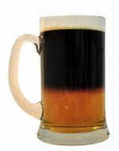

Kulminují přípravy na první kolo přímé volby prezidenta v ČR a začíná to být dramatické. "Inteligence" se navzájem straší předvolebními průzkumy, které prognózují vítězství Zemana nebo Fischera. Jedni chtějí, aby se našel lepší prezident tím, že se dohodneme na jednom kandidátovi. Druzí reagují tím, že Češi vždycky volí jen to menší zlo než aby si stáli za svým, no a pak to podle toho dopadá. Forma pokulhává, ale já si z toho beru hlavně obě myšlenky, které za iniciativami stojí ...
Lístky
Na úvodní vysvětlení: Dnes se na vysoké škole známkuje tak, že dostáváte písmenka od A do F, kde A odpovídá jedničce a F pětce. Nění to nějaký imperialistický výmysl, děje se tak myslím většinou kvůli kompatibilitě s ostatními evropskými a světovými školami - aby šlo přecházet a uznávat předměty.
Vysokoškolský lajdák
Vysokou školu jsem studoval vždy dost pragmaticky. Neměl jsem kvůli práci čas na nějaké skvělé výsledky a navíc jsem již brzy dostal pocit, že můj průběžný zájem nebo vědomosti, které ...
Půllitr s dvanáctkou je za námi a čeká na nás 13°. Už se nese, ale jestli bude pšeničná, nepasterizovaná, nefiltrovaná nebo tmavá, to ještě nevíme. Kdybych měl to předešlé pivo nějak zhodnotit, bude z mého pohledu rozhodně řezané a k tomu ještě trochu zvětralé.
Dvanáctka
První polovinu jsem se těšil na konec svého vysokoškolského studia. Odpočítával jsem dny a dělal vše pro to, aby to vyšlo a bylo to už konečně za mnou. Následně přišly prázdniny, po kterých jsem si ...
Říká se, že Vánoce jsou svátky klidu a míru. Nevím, kde na to kdo přišel.
Dva měsíce se lidi honí po obchodech a shánějí dárky, které druhým většinou dávají jen z kulturní povinnosti. Hrozně se mi líbí dárečky, které udělají radost a přitom jsou až hloupě jednoduché, žádné složité a drahé věci. I štangle dobrého salámu v nějakém pepřovém obalu je lepší dárek než drahá věc, kterou nepotřebuju, kosmetika kterou nepoužívám nebo sada hrníčků, které nešlo dát nikomu jinému. A ...
Dnes jsem u sporáku křičel
měl jsem vykloubenou kyčel
plyn nicméně stále syčel
tak jsem brzy opět mlčel.